Mediul integrat de dezvoltare Intellij IDEA
IntelliJ IDEA este un mediu integrat de dezvoltare inteligent (IDE) care vine cu
un editor de cod și instrumente de automatizarea a diferitor sarcini. IntelliJ IDEA de asemenea permite
integrarea cu ușurință a celor mai populare framework-uri utilizate de programatorii Java.
Mai jos sunt prezentate câteva din punctele forte ale acestui IDE:
- Smart code completion. Completarea
automată a codului presupune un set de tehnici prin care IDE-ul analizează și propune
dezvoltatorilor secvențe de cod corespunzătoare contextului curent.
- On-the-fly code analysis. Un IDE
nu este util dacă nu poate identifica dacă o expresie este sau nu validă, sau dacă
nu indică erori de compilare. IntelliJ IDEA analizează codul sursă în momentul
scrierii acestuia și imediat indică orice neconcordanță cu regulile define de
limbajul de programare și sugerează posibile optimizări.
- Advanced refactoring. Procesul de
refactorizare este adesea foarte obositor, deoarece presupune modificări la o mulțime de
fișiere. Chiar și atunci când refactorizăm cu atenție, uneori pot apărea
erori de compilare, de exemplu, pentru că am uitat să ajustăm utilizarea unei metode. Din
fericire, IntelliJ IDEA ne ajută să îndeplinim această sarcină cu
ușurință.
- Navigation and search. Unul dintre
marile avantaje ale IntelliJ IDEA este ușurința de a căuta și naviga către o
resursă.
Instalarea Intellij IDEA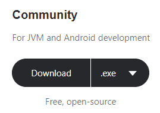
Pe site-ul
oficial veți găsi două ediții ale IntelliJ:
Community și Ultimate, prima fiind gratuită, iar a 2-a contra cost, motivul fiind că
versiunea Ultimate include multe instrumente care facilitează dezvoltarea aplicațiilor de tip
Enterprise. Ediția Community este recomandată programatorilor începători.
Descărcați versiunea Community, și urmați următorii pași:
Pe Windows:
- Rulați fișierul descărcat;
- Urmați pașii din cadrul asistentului de instalare.
Pe Mac OS:
- Montați fișierul .dmg descărcat ca pe un alt
disc;
- Copiați IntelliJ IDEA în directoriul
Aplicații.
Pe Linux:
- Despachetați fișierul .tar.gz;
- Rulați idea.sh din sub-directorul /bin.
Rularea și configurarea inițială Intellij
IDEA
La prima
deschidere a IntelliJ IDEA, vă va întâmpina un asistent de configurare inițial.
Acest asistent va sugera o listă de tehnologii pentru a fi activate sau
dezactivate, în dependență de necesități. Ulterior va propune activarea diferitor
plugin-uri. Este recomandat să activați plugin-urile pe care le veți folosi, deoarece cu
cât mai multe pluginuri sunt activate, cu atât mai mult timp va fi necesar pentru a porni
IDE-ul. Orice plugin poate fi ulterior activat/dezactivat în configurarea IDE-ului.
Pentru simplitate lăsați doar sugestiile deja activate de IntelliJ
și finalizați configurarea.
|
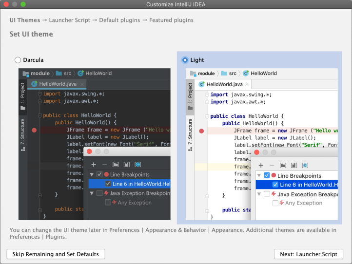
|
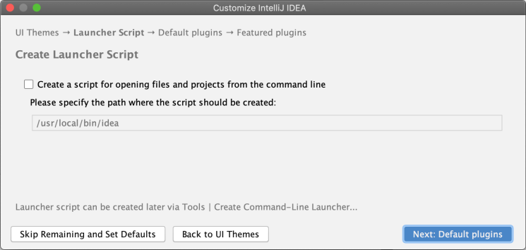
|
|
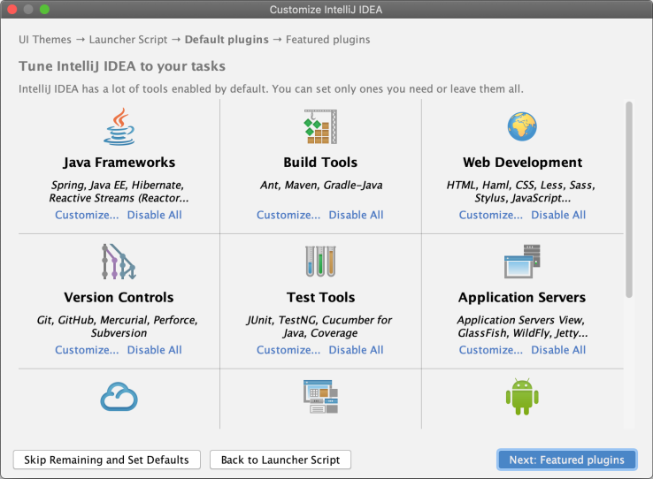
|

|
Următoarea fereastră (vezi Figura 1) din asistentul IntelliJ oferă mai multe
opțiuni de a începe lucrul cu un proiect.
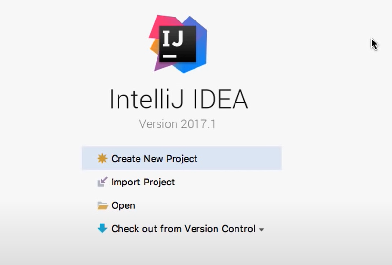
Figura 1 Selectarea opțiunii de creare a unui proiect
Întrucât scopul nostru e
să creăm primul proiect, veți alege Create New
Project.
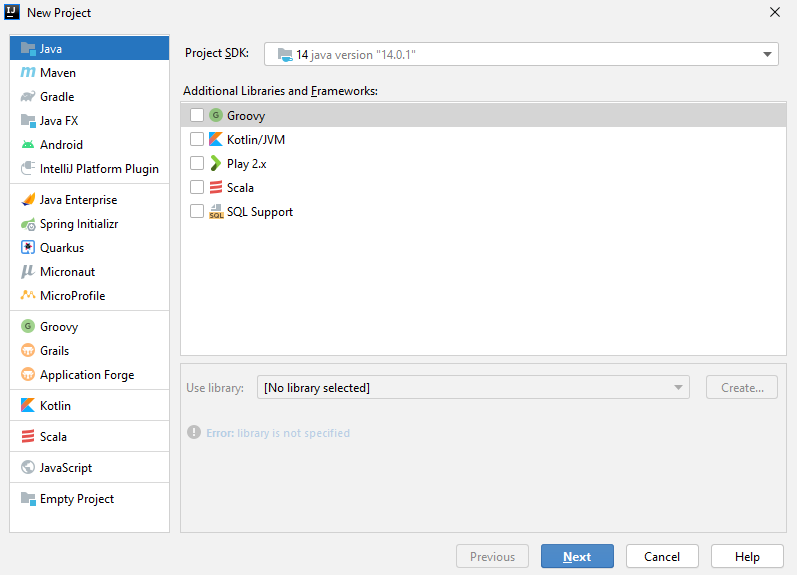
Figura 2 Selectarea tipului proiectului
În următoarea fereastră observați că puteți alege
tipul proiectului în dependență de tehnologia utilizată. Pentru a continua,
selectați Java și apăsați
butonul Next.
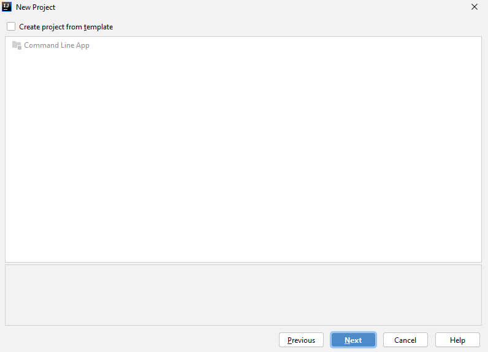
Figura 3 Posibilitatea de a crea un proiect folosind un șablon
predefinit
În fereastra următoare apăsați butonul Next întrucât nu vom folosi nici un
șablon.
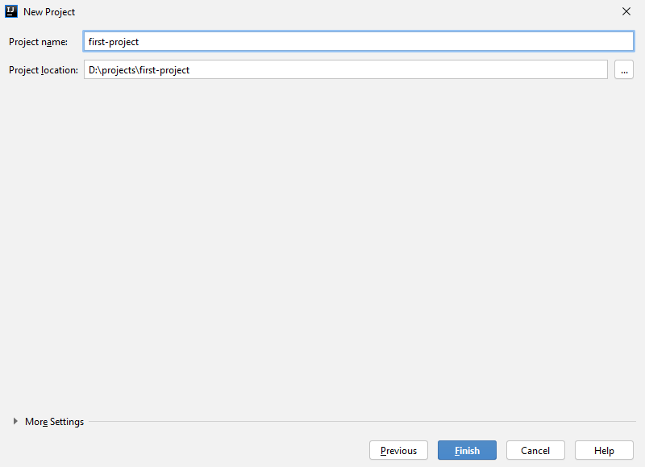
Figura 4 Definirea numelui și locației proiectului
În fereastra următoare tastați numele proiectului și alege
locația pe calculator, ulterior apăsați butonul Finish.
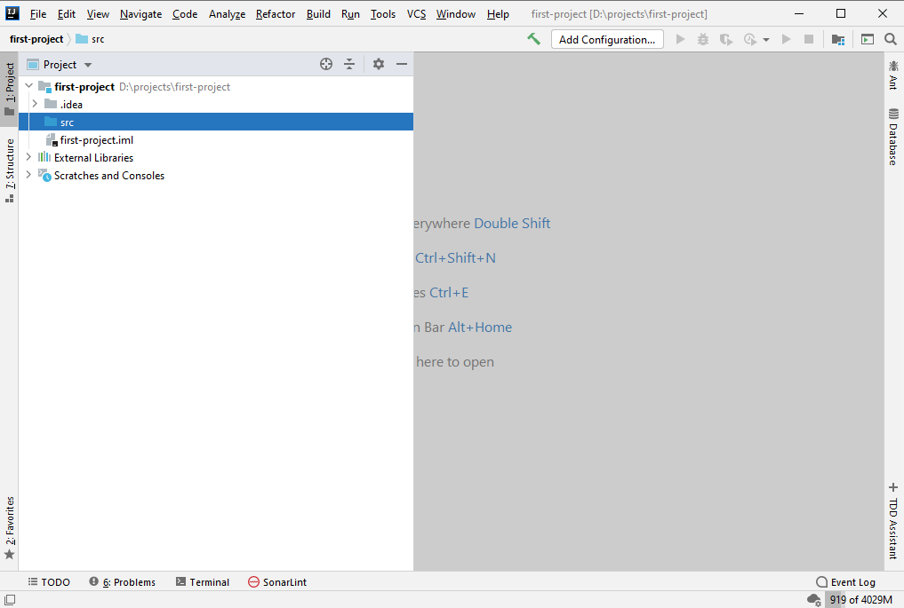
Figura 5 Vizualizarea structurii proiectului în cadrul IDE-ului
La finisarea lucrului cu asistentul
de creare a proiectului, fereastra din Figura 5 se va deschide. Puteți observa bara de meniu, tab-ul cu
informația despre proiect și alte lucruri utile.
Apăsând click dreapta pe directoriul src se va deschide meniul cu posibilitățile de
manipulare a acestuia (Figura 6).
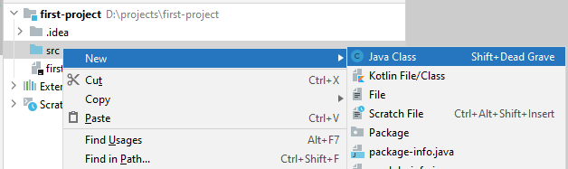
Figura 6 Posibilele acțiuni asupra directoriului src
Creați
o clasă de tip Java cu numele FirstApp.
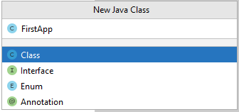
Figura 7 Crearea unei clase Java
Observați în mini-fereastra Project, în directoriul src a apărut clasa FirstApp.java. În partea de centru
a IDE-ului, vedeți conținutul fișierului FirstApp.java, iar în dreapta acestuia se
află tab-ul de navigare prin fișierele deschise.
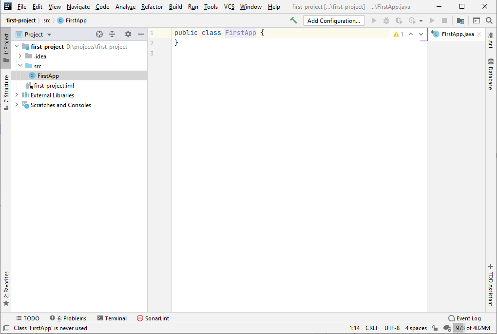
Figura 8 Privire de ansamblu asupra părților componente ale
IDE-ului
Acum putem trece nemijlocit la
scrierea codului. Vom utiliza exemplul menționat în secțiunile anterioare:
class FirstApp {
public static void main(String[] args) {
System.out.println("Hello
world!");
}
}
Odată ce am finisat introducerea codului, observăm cum IntelliJ
identifică această clasă ca fiind executabilă, datorită prezenței metodei
main (vezi Figura 9).
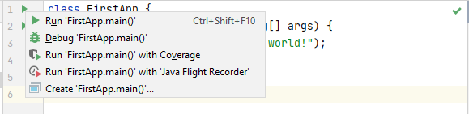
Figura 9 Opțiunile de rulare a programului Java
Ca urmare a execuției programului, am obținut un rezultat în
consolă.
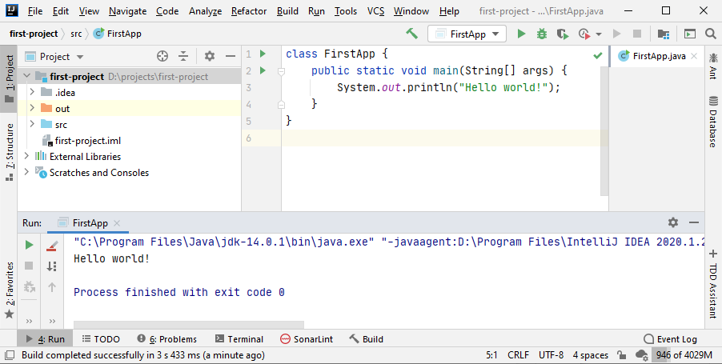
Figura 10 Rezultatul obținut ca urmare a execuției programului
Sistemul de control de versiunii GIT
Git este din ce in ce mai utilizat si cerut de
toti angajatorii, fiind un software care te ajuta la versionarea codului tau. De exemplu, daca vrei sa
construiesti pe baza a ceea ce ai lucrat pana acum sau sa aduci si alte persoane care sa contribuie la munca
ta, nu poti tine codul pe calculatorul tau pentru ca va deveni dificil ca si altii sa acceseze si sa lucreze
cu ceea ce tu ai facut pana la momentul respectiv.
Creatorul Linux, pe numele lui Linus Torvalds, este cel care s-a gandit la o metoda
de versionare a codului, in momentul in care a considerat ca este nevoie ca mai multi programatori sa
lucreze la versiunea sa de Linux.
Prin folosirea Git, altii
vor putea adauga si-si pune amprenta pe codul deja creat de tine.
GitHub
GitHub este un serviciu cloud care ajută dezvoltatorii să stocheze
și să gestioneze codul sursă, precum și să urmărească și să
controleze toate modificările aduse codului sursă.
În termeni simpli, GitHub este destinat dezvoltatorilor în care pot
gestiona proiectul, găzdui codul sursă și le pot revizui.
Instalare GIT
1. Descarcati instalatorul GIT de pe link-ul https://git-scm.com/downloads
2. Urmariti instructiunile instalatorului si instalati GIT
3. Deschideti cmd si rulati comanda git version (daca va afisata versiunea de git atunci git a fost instalat)
Creare repository GitHub
1. Accesati link https://github.com/ si creati un cont nou
2. Creati un repository nou tastand botonul New din pagina principala
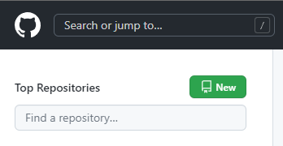
3. Dati denumirea repository-ului curs-java-tekwill
si tastati butonul Create repository